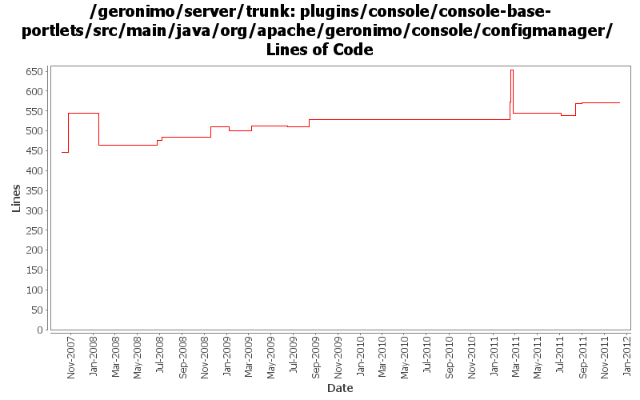

[root]/plugins/console/console-base-portlets/src/main/java/org/apache/geronimo/console/configmanager

| Author | Changes | Lines of Code | Lines per Change |
|---|---|---|---|
| Totals | 29 (100.0%) | 709 (100.0%) | 24.4 |
| gawor | 5 (17.2%) | 195 (27.5%) | 39.0 |
| genspring | 2 (6.9%) | 171 (24.1%) | 85.5 |
| xuhaihong | 6 (20.7%) | 131 (18.5%) | 21.8 |
| dwoods | 4 (13.8%) | 86 (12.1%) | 21.5 |
| djencks | 3 (10.3%) | 78 (11.0%) | 26.0 |
| violalu | 1 (3.4%) | 31 (4.4%) | 31.0 |
| jbohn | 2 (6.9%) | 10 (1.4%) | 5.0 |
| michaelfang | 1 (3.4%) | 6 (0.8%) | 6.0 |
| manugeorge | 1 (3.4%) | 1 (0.1%) | 1.0 |
| pmcmahan | 2 (6.9%) | 0 (0.0%) | 0.0 |
| gdamour | 2 (6.9%) | 0 (0.0%) | 0.0 |
GERONIMO-6229 Configuration not found Exception is thrown while accessing EBA portlet page
I did not see an easy way to list the web-contextpath of embedded WABs while the target EBA is stopped, so now EBA portlets will not dispaly those values if the target EBA is stopped.
13 lines of code changed in 1 file:
GERONIMO-6136 Portlet WARModules is unavailable if any war with errors is deployed
6 lines of code changed in 1 file:
GERONIMO-5582 add web url in eba porlet
31 lines of code changed in 1 file:
GERONIMO-5302 A successfully deployed war package(contained in a ear package) is not listed on admin console.
44 lines of code changed in 1 file:
GERONIMO-5769: A separate portlet for displaying web application bundles
15 lines of code changed in 1 file:
GERONIMO-5769 use OSGi API to operate WAB in portlet, suggestion from Jarek.
127 lines of code changed in 1 file:
GERONIMO-5769 Web Application Bundles (WABs) do not show up in admin console
44 lines of code changed in 1 file:
GERONIMO-4909 The changes just remove the bundle if we unload the car from ConfigurationManager
32 lines of code changed in 1 file:
Clean console codes and remove unused classes
1 lines of code changed in 1 file:
GERONIMO-4659 Include web app "Display Name" in console web app portlet (Patch from Victor Fang)
28 lines of code changed in 1 file:
show stopped modules names. Based on patch from Han Hong Fang (GERONIMO-4687)
1 lines of code changed in 1 file:
GERONIMO-4555 Can't start App Client after stop it from console
13 lines of code changed in 1 file:
GERONIMO-4507 Admin console should honor the priority of user agent's language setting - patch by Gang Yin
9 lines of code changed in 1 file:
GERONIMO-4369:The new attribute values are overwrote while restarting the DB pool connector:Configuration Manager will now apply overrides on restart
1 lines of code changed in 1 file:
GERONIMO-4484 Extraction, localization and display of messages generated in portlets. Applied common-message_fix.patch from Gang Yin.
9 lines of code changed in 1 file:
GERONIMO-4484 Extraction, localization and display of messages generated in portlets. Applied common-message-base.patch and common-message-core.patch from Gang Yin, with some minor updates.
17 lines of code changed in 1 file:
GERONIMO-4369 - persist connector attribute values on restart - thanks for the patch Ivan
1 lines of code changed in 1 file:
fix for showing parent/child components in the console (GERONIMO-4422)
3 lines of code changed in 1 file:
GERONIMO-4377 Fail to indicate datasource create unsuccessfully in admin console database pool porlet when choosing wrong database driver. Thanks to Ivan for the patch.
28 lines of code changed in 1 file:
GERONIMO-4166 EAR missing dependency on j2ee-security breaks Server Console. Thanks Manu for the patch.
32 lines of code changed in 1 file:
added a checkbox to show/hide parent and child components of modules in the console (GERONIMO-4152)
16 lines of code changed in 1 file:
GERONIMO-3732 additional dependency cleanup
78 lines of code changed in 1 file:
GERONIMO-3732 step 3 Move plugin and deployment pages into a console plugin
0 lines of code changed in 2 files:
When distributing w/o the explicit selection of a target, we only distribute
to the first target returned by DeploymentManager. This first target is
the default target, or configuration store, and users can specify an abstract
name query (in EditableKernelConfigurationManager) to identify this default
target.
Now that multiple configuration stores per server are better handled
out-of-the-box, we can re-enable the "clustered" configuration stores.
Also, let's more the rmock dependency to testsupport-common so that we
can use it from all our tests.
This fixes GERONIMO-3612 - When no target configuration store is explicitly
specified while installing a configuration, the configuration should be
installed to a default configuration store
0 lines of code changed in 2 files:
updated the config portlet to: 1) in war view, display war files edded in ear files, and 2) in ear view, display the contexts of the embedded war files. (GERONIMO-1945)
160 lines of code changed in 1 file:
GERONIMO-3509 copy the new admin console and its plugins into the server project so they
can be built and released together.
also, merge recent improvements made to the old admin console into the new console:
revs 581420 580352 576651 574637 573719 573616
0 lines of code changed in 2 files: